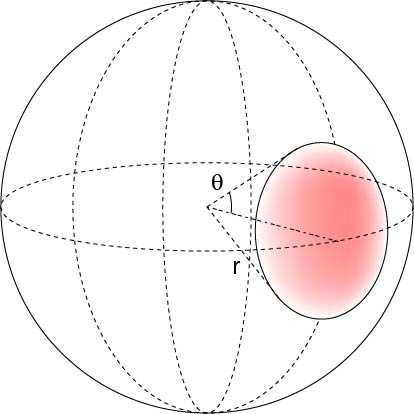
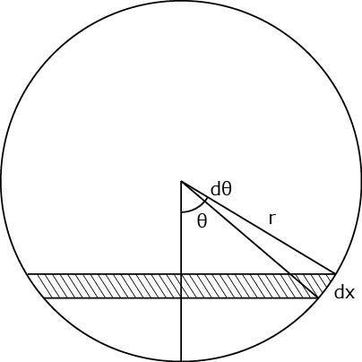

対物レンズの明るさってNAの二乗に比例するの？-01
よく，
対物レンズの明るさはNAの二乗に比例する
と言われます．
確かに，
NAはsinθに比例するので，対物レンズの半径と比例しそうなので，面積は二乗
と考えれば，納得できます．
現に，オリンパス，のサイトにもそう記述されています．
では，計算してみましょう．
一点から発せられた光は等方的に広がっていくので，立体角を考えていけばよいでしょう．
そのうち，対物レンズがとらえることができる光はごく一部です．

図のように，角度θ部分に相当しますね．
この赤い部分の面積が球の表面積のどのくらいになるかを計算すればよいことになります．
真横から見た図を考えます．

このdθの作る帯状の部分の面積を積分していけばよいので，円周は，
\(\Large 2 \pi r sin \theta \)
となります．帯の幅，dx，は，
\(\Large dx = r d \theta \)
となるので，面積，dS，は
\(\Large dS = 2 \pi r sin \theta \times r d \theta\)
\(\Large \hspace { 18 pt } = 2 \pi r^2 sin \theta d \theta\)
となります．
これを，0からθまで積分すればよいので，
\(\Large S = \int_0^{\theta} 2 \pi r^2 sin \theta ' d \theta ' \)
\(\Large \hspace { 18 pt } = -2 \pi r^2 [cos \theta ' ]_0^{\theta} \)
\(\Large \hspace { 18 pt } = 2 \pi r^2 [1 - cos \theta] \)
全表面積との割合は，
\(\Large S_{all} = 4 \pi r^2 \)
\(\Large S_{ \theta} = 2 \pi r^2 [1 - cos \theta] \)
\(\Large \frac{S_{ \theta}}{S_{all}} = \frac{ 1 - cos \theta}{2} \)
となります．
上記の立体角の一部分とNAとの関係は，
\(\Large \frac{S_{ \theta}}{S_{all}} = \frac{ 1 - cos \theta}{2} = \frac{1}{2} [1- \sqrt{1-sin^2 \theta}] \)
\(\Large \hspace { 20 pt } = \frac{1}{2} [1- \sqrt{1-( \frac{NA}{n})^2}] \)
となります．
となると．．．．NAの二乗に比例．．ではないですね．．．
ただ，セムロックのHP，によると，今回導き出した式と同じ式ですね．．．
ただし，NAが小さい場合には，
\(\Large (1 + x)^a \simeq 1 + a x \)
となるので，
\(\Large \sqrt{1-( \frac{NA}{n} )^2} \simeq 1 - \frac{1}{2} ( \frac{NA}{n} )^2 \)
となるので，
\(\Large \frac{S_{ \theta}}{S_{all}} = \frac{1}{4} ( \frac{NA}{n} )^2 \)
となり，NAの二乗に比例します．
光ファイバーのようにNAが小さい場合には成り立ちますが，最近の顕微鏡用の対物レンズはNAが高いですからね．．．．
もし，どなたかこの矛盾に対してご存じの方がおりましたら，教えてください．